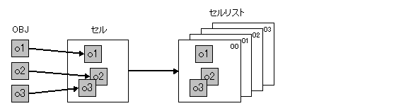
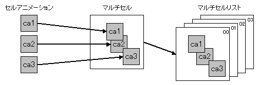

Animations Possible on the NITRO-System
Description
In the NITRO-System 2D development environment, game characters that carry out pattern animation are formed using cells and multicells. These concepts (cells and multicells) are described below.
Cell and Cell List

A cell combines and arranges multiple OBJs to form one game character.
By planning the conversion of each piece of image data, the character data can be used more efficiently instead of just displaying the game character as one large OBJ. For example, in a bilaterally symmetrical game character only half of the character data needs to be created. That data can be flipped and used for the other half.
By combining multiple OBJs it is possible to form a game character that exceeds the OBJ size limit.
A cell list is a compilation of multiple cells and is referenced from cell animations, which are described below.
Cell Animations
Cell animations are rendered by interchanging multiple cells one after the other. The cells registered in the Cell List make up the animations. The display time (number of frames) can be specified for each cell of the animation. The cell is displayed only for the specified number of frames, and interchanges to the next cell.
Multicells and Multicell Lists

A multicell is an arrangement of multiple cell animations combined together.
Multiple cell animations are composited to create one large game character.
A multicell list is a compilation of several multicells and is referenced from multicell animations, which are described below.
Multicell Animations
Multicell animations are rendered by interchanging multicells one after the other. The multicells registered in the Multicell List make up the animations. The display time (number of frames) for each multicell of the animation can be specified. The multicell is displayed only for the specified number of frames, and changes to the next multicell. The parts that make up a multicell (known as cell animations) carry out animation based on the timing configured in their individual settings. In other words, the individual parts of a game character execute animations with different timing. This method helps create game characters with complex movements.
VRAM Transfer Animations
The animations previously described were implemented by changing the reference target for the image (character) data displayed by the cell. However, when colorful animations using many image data types are attempted, the maximum capacity of the image data becomes a problem. VRAM transfer animation consists of animation implemented by the cell image (VRAM) data being appropriately transferred and rewritten. Using VRAM animation allows you to create an animation with a large amount of image data while keeping hardware overhead to a minimum. VRAM transfer animation is used to develop 2D game main characters that have many animation patterns. To use VRAM transfer animation, options (for example, specific data for VRAM transfer animation) must be specified and a conversion must be performed. The source NITRO-CHARACTER data should have no character compression and should be in 1D mapping mode format.)
More specifically, processing is performed in the G2D Library up to the point that the VRAM transfer task request is made. The actual processing for the VRAM transfer execution and task management is left to an external module. The GFD library provides the standard implementation of the module that performs the VRAM transfer processing. Refer to the GFD Library document.
See Also
None.
Revision History
12/06/2004 Initial version.